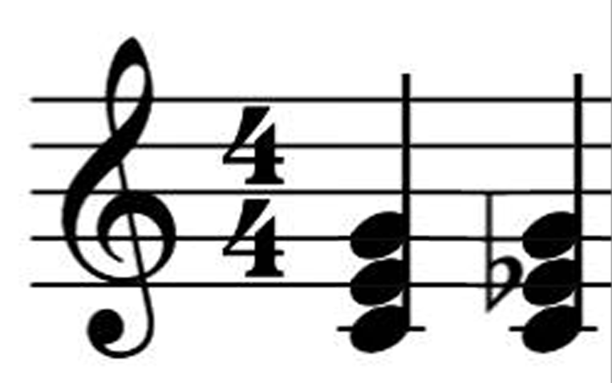

Acordes são combinações de três ou mais notas tocadas ao mesmo tempo ou de forma sequencial. Eles são os blocos de construção fundamentais da harmonia em uma música e criam a estrutura para as melodias. Cada acorde é construído a partir de uma nota raiz (a nota base) e outras notas que estão a uma distância específica da raiz.
Os acordes são geralmente formados empilhando-se terças sobre a nota raiz. O exemplo mais comum é o acorde maior, formado pela combinação de uma nota raiz, uma terça maior e uma quinta justa. Acordes menores seguem a mesma estrutura, mas com uma terça menor em vez de uma terça maior.
Por exemplo, no acorde de C maior (C, E, G), temos a raiz (C), a terça maior (E) e a quinta justa (G). Já no acorde de C menor (C, E♭, G), a terça menor (E♭) substitui a terça maior.
|  |
|---|
Existem vários tipos de acordes, cada um com características únicas e sons diferentes. Aqui estão alguns dos tipos mais comuns:
Inversões são variações do acorde em que uma nota diferente da raiz está no baixo. Existem três inversões principais para tríades (acordes de três notas):
Inverter um acorde pode mudar sutilmente sua sonoridade, o que é útil para criar variações harmônicas sem mudar o acorde em si.
Os acordes desempenham funções específicas dentro de uma tonalidade, e essas funções são importantes para criar movimento e tensão em uma música. As três funções harmônicas principais são:
Uma das melhores formas de aprender acordes é praticar progressões comuns, como as progressões I-IV-V-I (tônica-subdominante-dominante-tônica). Essas progressões ajudam a treinar seus ouvidos e mãos para os diferentes tipos de acordes e suas transições.
Além disso, é importante praticar tocar acordes em várias inversões e em diferentes tonalidades para ganhar fluência no instrumento e entender melhor o papel harmônico de cada acorde.